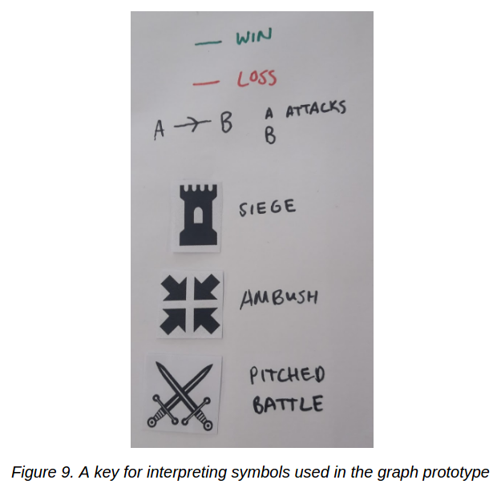
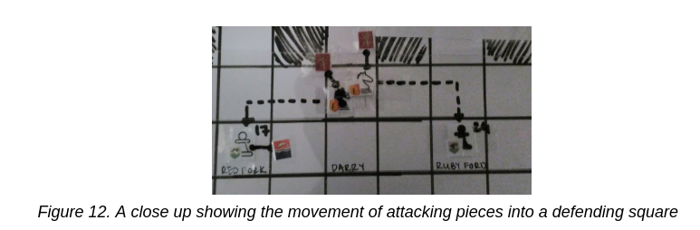

Prior to establishing the final design for this visualisation, three prototypes were developed. All prototypes were developed with a mind to reproducing them for online consumption. This was done so that the authors could contribute their visualisation back into the community which provided the data used in this study.
Map
Literature Review: Speculative Interactive Game of Thrones Map
In order to see what was already done in terms of positional data and maps, Urisohn examined the Game of Thrones Speculative Map (Quartermaster, n.d.). This map allows one to zoom in and out for an overview and apply various filters to specify details on demand. The leftmost half of Figure 1 demonstrates its ability to show the Nobility of Westeros. The rightmost half illustrates its ability to show one the paths of major characters.
While this map was able to answer simplistic visual queries, it’s data was not satisfactorily multi-dimensional. Therefore it could not be used to resolve complex visual queries. It was useful in its demonstration of how to place a lot of information on a map at the same time. Therefore while the authors’ visualisation illustrated more complex data and hence could resolve more complex visual queries, it sought to employ similar tactics when displaying high volumes of data.
Literature Review: Visualisation of the Decisive Moments in the Battle of Gettysburg
During the American Civil War surveillance was limited to a commander’s line of sight and therefore used Reconnaissance to establish how best to deploy their troops (Knowles, 2013). For example, when Federal General saw Confederate troops from Little Round Top he called in reinforcements (Knowles, 2013).
Knowles (2013) visualised the Battle of Gettysburg (see Figure 2) to see what could be learnt about it. This included visualising the terrain of 1863 and noting the changes in positions of the troops of between 1 and 3 July. From there, Knowles (2013) illustrated what the commanders of the battle could see and not see at significant moments. This perspective was visible via an interactive tool called a viewshed. The invisible parts of the landscape appeared gray while visible terrain and troop were shown clearly in this view.
In Figure 3 one can see that Ewell could see roughly half the Union forces on the field at this time, including a brigade of Union cavalry to the east. Knowles (2013) found that Confederate General Lee could not see the position of the enemy due to their more advantageous position.
Despite one’s ability to draw relevant conclusions from this visualisation, it is difficult to remember information when moving across the timeline. Therefore the authors’ sought to minimise this effect in their own visualisation.
Implementation
In this prototype (illustrated in Figure 4) the locations of battles corresponded directly to the location of the pins on the map. These pins illustrated the type of battle which took place, but little other information. The Houses which took part in the battles were available for de-/selection on the bottom-most navigation bar. The order of the battles and the year in which they each occurred was indicated by the dots corresponding to them on the timeline. When a dot was selected, the visualsation zoomed in to give a detailed view of that battle and listed its name in the left-most panel.
While this visualisation was able to answer most of the visual queries on demand, one of its main criticisms was its over use of this “details-on-demand” (Shneiderman, 1996) approach. Other criticisms included the over loaded navigation bar for House selection, the use of crosses to indicate selection and the lack of relevant character information.
Graph
Literature Review
An important part of the ASoIaF appeal, is the characters, and how their storylines progress. The possibility of incorporating this information was explored and the visualisation by Hillsdon (2013) (see Figure 5) was analysed.
The character lines progressed with time on the x axis. The y axis represented the different characters, and abstractly, the locations of the characters (see Figures 5 and 6). The colours of the timelines showed the character’s house alliance, and several other symbols represented different types of events, as shown in the legend (see Figure 7).
This visualisation represented the complexity of the many characters and their stories very well. This made it easy to follow both an individual’s story, and the state of affairs at a particular time or place. However, it was too abstract to understand easily. A lot of the colours did not intuitively map to the house sigils/theme and the rest of the symbols relied entirely on the legend (see Figure 7) for comprehension. This made the graph difficult to interpret intuitively, without continuously referencing the legend. The lack of visuals made it less appealing as a graphic for GoT fans, however the clean look makes the information easy to follow, given the legend as a guide.
Implementation
Taking some inspiration from the timelines visualisation, the visualisation in Figure 8 was conceptualised.
Time was shown along the x axis, where battle names were listed chronologically. Along the y axis, various houses were shown. The points of intersection represented the battles, and the symbol represented the type of battle, as shown in the key (see Figure 9). The participants of a battle were each connected to it by a line, which carried several important pieces of information: win/loss, attacker/defender, and relative size.
While all the information was shown, this visualisation favoured queries relating to houses, and their typical roles in a battle (see Figure 8). For example, it could be seen how often the Lannisters won (often) and how frequently Robb Stark lost (often). Additionally, it could be seen that Robb was attacked more often than he attacked, however, this piece of information wasn't as intuitive to follow. This is due to the arrows on the lines seemingly implying some temporal connection.
Chess
Literature Review
In exploring the more metaphorical representations of battles, it was decided to attempt to adapt the battles to a game of chess.
Chess has been used in the past to represent war and battles. In this iconic photograph by Ralph Morse (see Figure 10), traditional chess pieces are replaced by nuclear missiles, while the pieces keep their traditional colours. This use of colour highlights the stark boundaries between the U.S.A. and Russia during the Cold War.
The use of the map in the background both encoded the relative positions of the opponents globally and emphasised the fact that this war took place in virtually every country. The white pieces representing the U.S.A. stand to the left of the map, closest to the Americas, while the black pieces representing Russia stand to the right. The proximity of the opposing pieces without any being able to take the other highlighted how the Cold War was always close to, but never actually in, all out war. The choice of colour carried the implication that the U.S.A. is the “good” side of the war as it is represented by the white pieces and that Russia is the “bad” as it is represented by the black pieces. This interpretation is of course based on the authors’ cultural and linguistic backgrounds, in which phrases such as “black hearted” and “white knight” are used to refer to evil and good respectively.
While this image verified that chess can be used as a metaphor for war, it has several issues in its execution as a depiction of the Cold War. To start off with, it relied on the viewer’s knowledge of the Cold War to understand who the opposing sides were. Secondly, there was some confusion as to whether the missiles themselves carry any meaning other than that already described. What did it mean if there are more U.S. American missiles that Russian? Was it referring to the fact that the U.S.A. was physically more dominating or stronger in arms or both? Or was it just an accident? It failed to show the progression of the Cold War, merely depicting its state. It also failed to show its consequences and its resolution. Therefore, while it served to prove the concept of depicting war with the metaphor of chess, more work needed to be done to improve this metaphor.
Implementation
In this visualisation, locations on the map were be positioned relative to each other, rather than at accurate latitudes and longitudes (see Figure 11). The pieces would represent both the forces involved and the different types of battles. The attacker would be positioned relative to the location, such that their movement as dictated by the rules of chess would move them into the defender’s square (see Figure 12).
One of the difficulties in this design was in avoiding making a ‘duck’ of it. Ultimately the authors’ found the following:
- Some of the pieces did not adapt well to the type of battle - for example, bishop for ambush
- The use of the black and white squares of a chess-board seemed to convey meaning when it didn’t
- It was difficult to place the markers for both the kings and the forces on the pieces without causing confusion
Comparison
Ultimately, the decision was made to elaborate further on the map design. Whilst it may have been possible to make use of features from the other prototypes in this final design, the authors could see no clear way of doing so whilst minimising unnecessary complexity and clutter.
The map is far stronger than the other two prototypes as fans of ASoIaF will be familiar with its design from the books, and fans of GoT will readily be able to identify places which the television series focussed on, such as King’s Landing. Its ability to show details on demand prevents it from being too cluttered by them, something which the graph prototype falls prey to.